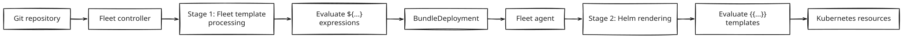
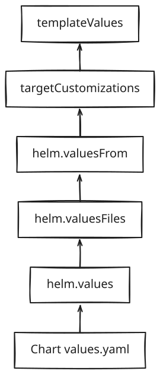
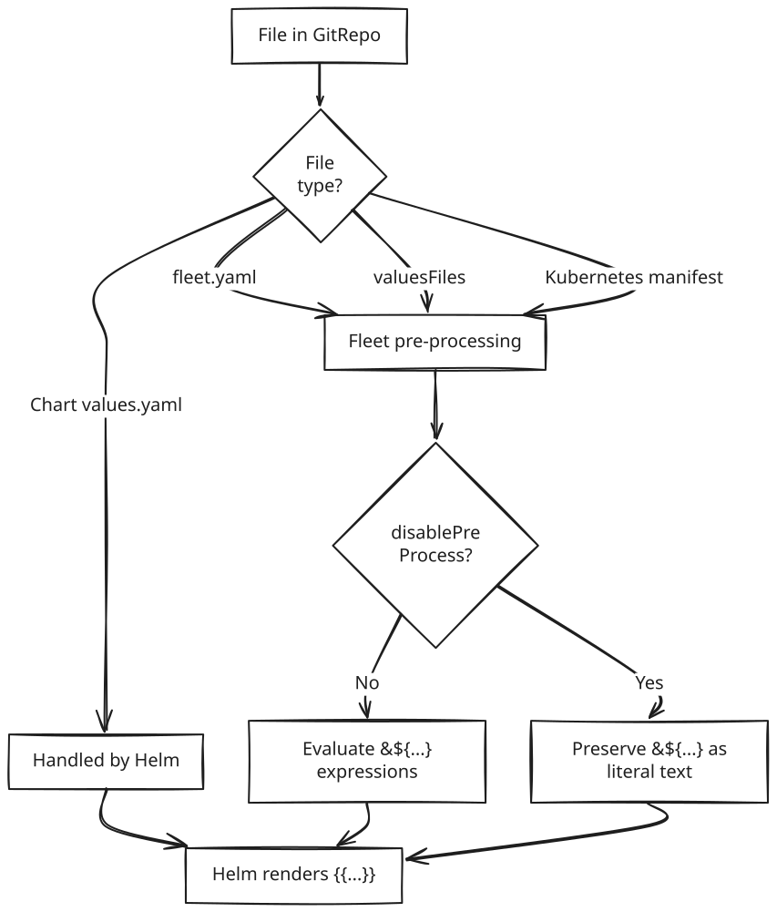

SUSE® Rancher Prime Continuous Delivery Templating
Templating helps you customize deployments for different clusters without maintaining separate configuration files. This helps you:
-
Deploy environment-specific image tags.
-
Use cluster labels to define regional configurations.
-
Generate dynamic values for Helm charts.
-
Reuse computed values across multiple manifests.
SUSE® Rancher Prime Continuous Delivery preprocesses the following files:
-
fleet.yaml -
Helm values files
-
Kubernetes manifests
-
HelmOps resources
When you install Helm charts using SUSE® Rancher Prime Continuous Delivery, it is important to distinguish between SUSE® Rancher Prime Continuous Delivery-managed files and internal Helm chart files:
-
Helm chart values.yaml (No templating):
-
The default values.yaml file bundled inside a Helm chart does not support SUSE® Rancher Prime Continuous Delivery templating. Any substitutions happen during the standard Helm chart rendering phase, before SUSE® Rancher Prime Continuous Delivery applies the chart. If you use ${var} in this file, Helm treats it as plain text.
-
-
Fleet valuesFiles and values (Templating supported):
-
SUSE® Rancher Prime Continuous Delivery allows you to reference additional values files through fleet.yaml using the valuesFiles or values keys. These SUSE® Rancher Prime Continuous Delivery-specific configurations fully support templating, allowing you to apply dynamic, environment-specific overrides.
-
How SUSE® Rancher Prime Continuous Delivery templating works
Before a Bundle is created, the Fleet controller scans specific files (like fleet.yaml and values.yaml). It searches for ${ } delimiters. These are used instead of standard Go-template {{ }} to avoid collisions with Helm’s own templating engine.

For example, if you have a values.yaml file with:
values:
region: ${ .ClusterLabels.region }If the target cluster contains the label: region: us-west. Then SUSE® Rancher Prime Continuous Delivery generates:
values:
region: us-westSUSE® Rancher Prime Continuous Delivery versus Helm templating
SUSE® Rancher Prime Continuous Delivery preprocessing happens before Helm rendering.
| Feature | SUSE® Rancher Prime Continuous Delivery Templating | Helm Templating |
|---|---|---|
Delimiter |
${ } |
{{ }} |
Timing |
Pre-processing (Manager side) |
Rendering (Cluster side) |
Context |
Cluster Labels, Annotations, Name |
Values.yaml, Chart metadata |
Processor |
Fleet Controller |
Helm Binary |
For example, if you have a fleet.yaml with:
values:
cluster: ${ .ClusterName }
config:
message: "{{ .Values.message }}"In this example:
-
SUSE® Rancher Prime Continuous Delivery resolves ${ .ClusterName }
-
Helm later resolves {{ .Values.message }}
Value precedence
When SUSE® Rancher Prime Continuous Delivery prepares the final values for a deployment, it merges configuration from multiple sources. If the same key exists in multiple places, the source with the highest precedence wins. Here are possible sources of values, listed in decreasing order of precedence:
-
templateValues: Values generated here always overwrite other sources. Use this for logic-heavy variables. -
targetCustomizations: Overrides defined for specific cluster groups. -
helm.valuesFrom: Values loaded dynamically from ConfigMaps or Secrets on downstream clusters. These take precedence over files and inline values. -
helm.valuesFiles: External YAML files referenced in the helm block. These override inline helm.values. -
helm.values: Global inline values defined in your SUSE® Rancher Prime Continuous Delivery.yaml. -
Chart values.yaml: The default values bundled inside the Helm chart.

Accessing Cluster data
SUSE® Rancher Prime Continuous Delivery injects specific cluster information into the template context. You can access these using the following keys:
| Variable | Description | Example |
|---|---|---|
.ClusterName |
The metadata name of the Cluster resource. |
${ .ClusterName } |
.ClusterLabels |
Map of labels assigned to the Cluster. |
${ .ClusterLabels.env } |
.ClusterAnnotations |
Map of annotations assigned to the Cluster. |
${ .ClusterAnnotations.owner } |
.ClusterValues |
Custom values in the Cluster’s spec.templateValues. |
${ .ClusterValues.apiEndpoint } |
.ClusterNamespace |
The namespace where the Cluster resource resides. |
${ .ClusterNamespace } |
Expressions and logic
You can also leverage Sprig functions in SUSE® Rancher Prime Continuous Delivery to use complex string manipulation and logic.
|
Avoid using Sprig functions that produce random output (for example, uuidv4). Randomly generated values change on every evaluation and will trigger endless, continuous redeployments. Always guard against null values when writing your templates to prevent rendering errors. |
Default Values
Use default to ensure a deployment doesn’t fail if a label is missing.
values:
region: ${ default "us-east-1" .ClusterLabels.region }Conditional Logic
Change configuration based on the environment.
values:
# Sets 'stable' for prod, 'latest' for others
imageTag: ${ if eq .ClusterLabels.env "prod" }stable${ else }latest${ end }Use templateValues for cluster-specific data
You can define cluster-specific data mappings directly on the downstream cluster using the templateValues field in the Cluster custom resource. These values are then passed into the SUSE® Rancher Prime Continuous Delivery templating engine and can be consumed in your fleet.yaml (or HelmOp) files using the .ClusterValues variable.
Variable Reuse
You can define a value once in templateValues and reference it multiple times in the values block using the .TemplateValues prefix.
helm:
templateValues:
# 1. Define once
templateValues:
environment: production
region: eu-west
enableMetrics: "true"
values:
values:
app:
env: "${ .ClusterValues.environment }"
region: "${ .ClusterValues.region }"
metrics:
enabled: "${ .ClusterValues.enableMetrics }"
# Example of using ClusterLabels alongside ClusterValues
siteIdentifier: "${ index .ClusterLabels \"site-id\" }"Structural Generation (Advanced)
Standard YAML blocks must be valid YAML before processing. This prevents you from using range or if to generate lists or maps. Because templateValues is a map of strings, it bypasses this restriction. SUSE® Rancher Prime Continuous Delivery evaluates the string first and then parses the result as YAML.
The following example deploys different image tags depending on the cluster environment.
helm:
templateValues:
imageTag: ${ if eq .ClusterLabels.env "prod" }stable${ else }latest${ end }
values:
image:
repository: nginx
tag: ${ .TemplateValues.imageTag }This results in
-
If the cluster label is env=prod, then the rendered image tag is stable.
-
If the cluster label is env=dev, then the rendered image tag is latest.
Disable preprocessing
If you use other templating languages in your configurations and want to avoid conflicts with SUSE® Rancher Prime Continuous Delivery’s templating engine, you can turn off SUSE® Rancher Prime Continuous Delivery’s templating entirely in fleet.yaml.
helm:
disablePreProcess: trueThis helps you template syntax conflicts with SUSE® Rancher Prime Continuous Delivery preprocessing, if you want to preserve raw template expressions.
This flowchart below provides a clear path for file processing.

Escaping expressions
To escape a single expression while keeping the engine active, use a double dollar sign ($$).
For example, value: $${ .ClusterName }, results in value: ${ .ClusterName }.
Test template expressions locally
You can test your values templating and preview how your expressions render using the SUSE® Rancher Prime Continuous Delivery command-line interface (CLI). The fleet target command evaluates a local bundle file against a live cluster and outputs the exact resources the SUSE® Rancher Prime Continuous Delivery controller would create.
Prerequisites: Unlike the fleet apply command, which can run entirely locally without a cluster, fleet target requires access to a running Kubernetes cluster where SUSE® Rancher Prime Continuous Delivery is installed.
-
Create a local bundle: First, use the fleet apply command to convert your existing local directory into a bundle file. Run fleet apply -o bundle.yaml.
-
Evaluate the targets: Run the fleet target command and pass the generated bundle file as an argument. You can specify a namespace as an argument so the CLI knows where to look for your target Cluster resources. Run fleet target -f bundle.yaml
-
Inspect the output: The command evaluates your targeting rules and prints the BundleDeployment and Content resources that would be created. Inspect this output to verify that your template expressions evaluated correctly against the specific cluster labels, names, and values.
Best practices
-
Whitespace Control: Use ${- and -} to strip leading/trailing whitespace, especially in templateValues where YAML indentation is sensitive.
-
Centralize Logic: Use templateValues for complex calculations to keep the main values block clean.
-
Defensive Coding: Always provide a default value for cluster labels to avoid empty string injections.
Troubleshooting templating
Template value is empty
-
Verify that the cluster label or annotation actually exists on the Cluster resource in the management plane.
-
Check that the template expression is valid Go syntax.
-
Ensure preprocessing is enabled for the specific file.
Template expression is not evaluated
-
Verify that the file type supports preprocessing (e.g., fleet.yaml, values.yaml).
-
Ensure disablePreProcess is not enabled in your configuration.
-
Confirm the syntax strictly uses the ${ } delimiter.
Helm template conflicts
-
Remember that SUSE® Rancher Prime Continuous Delivery and Helm use different template syntaxes.
-
Use ${ } for SUSE® Rancher Prime Continuous Delivery pre-processing and {{ }} for Helm templating.
-
Avoid mixing both in the same expression.
YAML Parse Errors
-
If using templateValues for complex blocks, use whitespace control (${- and -}) to ensure the generated YAML remains structurally valid. Incorrect indentation is the primary cause of deployment failures in logic-heavy templates.